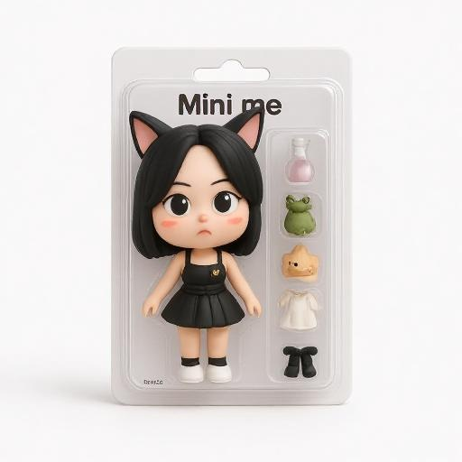

시각디자인을 처음 시작했을 때 저는 단순히 `예쁜 디자인`을 만드는 것이 목표였습니다.
하지만 실무를 하면서 점차 깨닫게 되었습니다.
아무리 시각적으로 완성도 높은 디자인이라도 상품의 특성을 제대로 반영하지 못하거나
고객의 니즈와 맞지 않으면 의미가 없다는 것을 알게 되었습니다.
진정한 디자인은 브랜드와 고객 사이의 다리 역할을 하는 소통의 도구라는 걸 알게 되었습니
다.
그 후 저는 패키지 디자인부터 배너 제작까지, 디자인이 닿을 수 있는 모든 영역에서
이 `소통`의 힘을 실험해왔습니다. 저만의 작업 방식도 자연스럽게 정립되었습니다.
상품 정보를 꼼꼼히 확인하고, 관련 레퍼런스를 찾아 분석한 후, 상품과 어울리는
디자인을 스케치나 초안으로 구체화하여 본격적인 작업에 들어갔습니다.
디테일에 집착하는 성격 때문에 작은 부분 하나까지 놓치지 않으려 하고, 호기심이 많아서
끊임없이 다른 디자인들을 찾아보며 레퍼런스를 수집합니다. 이런 과정에서 예상치 못한
아이디어들이 떠오르곤 합니다. 이 과정에서 가장 중요하게 생각하는 것은 팀원들과의 소통입니다.
기획자, 마케터, 개발자와 끊임없이 의견을 나누며 서로의 관점을 이해하고, 때로는 촬영부터
리터칭까지 직접 손을 대가며 최고의 결과물을 만들어왔습니다.
12년간의 경험을 통해 저만의 디자인 철학도 확립되었습니다. 단순히 유행을 따르는 것이 아니라,
상품의 본질과 타겟 고객을 깊이 이해하는 것이 먼저라고 생각합니다. 때로는 클라이언트가
원하는
방향과 제가 생각하는 최적의 방향이 다를 때도 있었지만, 충분한 소통을 통해 서로의 관점을
이해하고
더 나은 결과물을 만들어내는 과정에서 큰 보람을 느꼈습니다.
이제 저는 단순히 주어진 업무를 수행하는 디자이너가 아닌, 브랜드의 성장 파트너가 되고 싶
습니다.
특히 소통을 중요시하고 팀워크를 바탕으로 성장하는 조직에서 일하고 싶습니다.
현재는 프리미어 프로를 시작하며 감각있는 영상 제작도 배우고 있으며, 웹디자인 분야 역시
더
깊이 있게 공부 하고 있습니다. 지금까지 쌓아온 경험과 앞으로의 배움을 통해 귀사와 함께
성장해나가고 싶습니다.